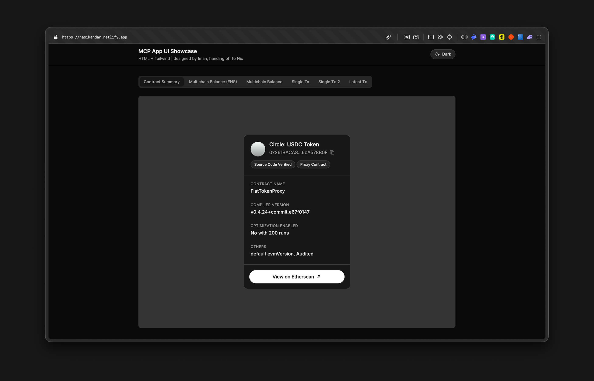
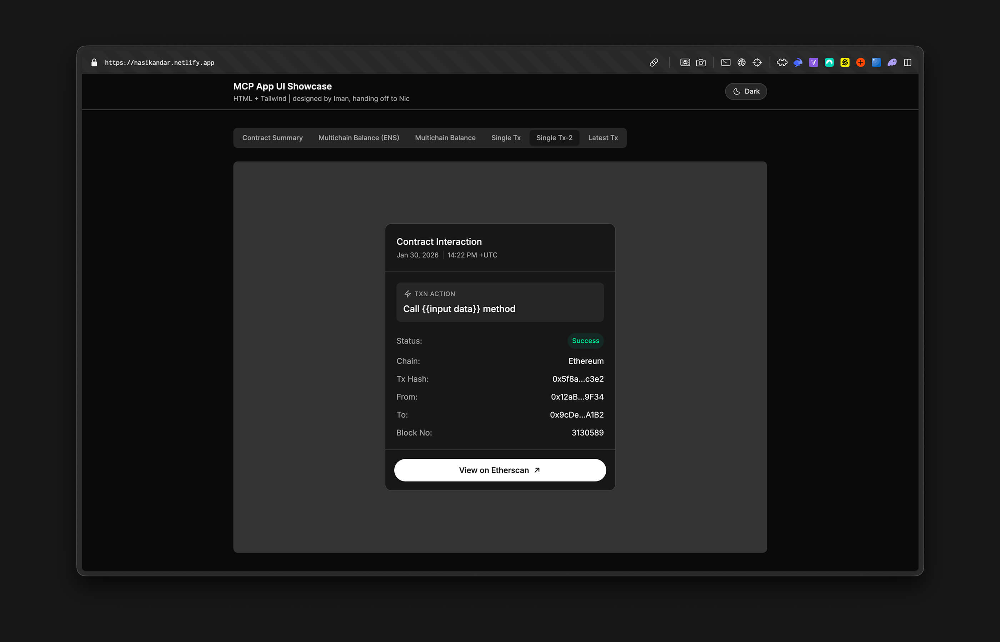
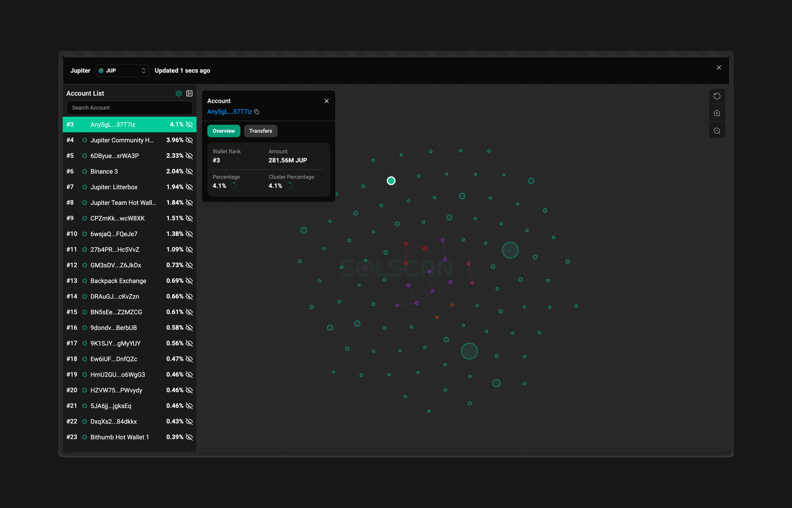
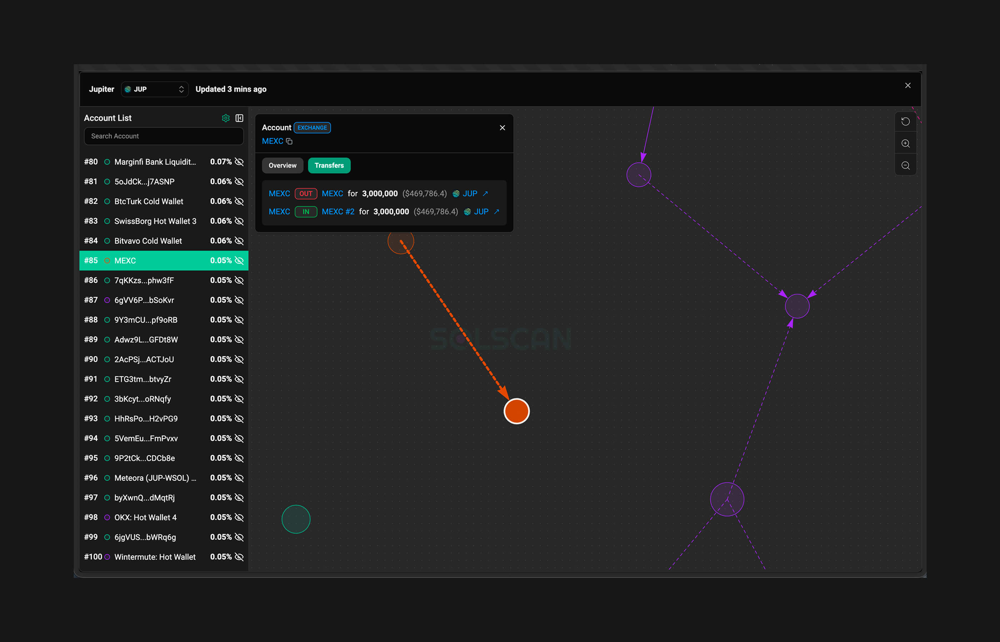
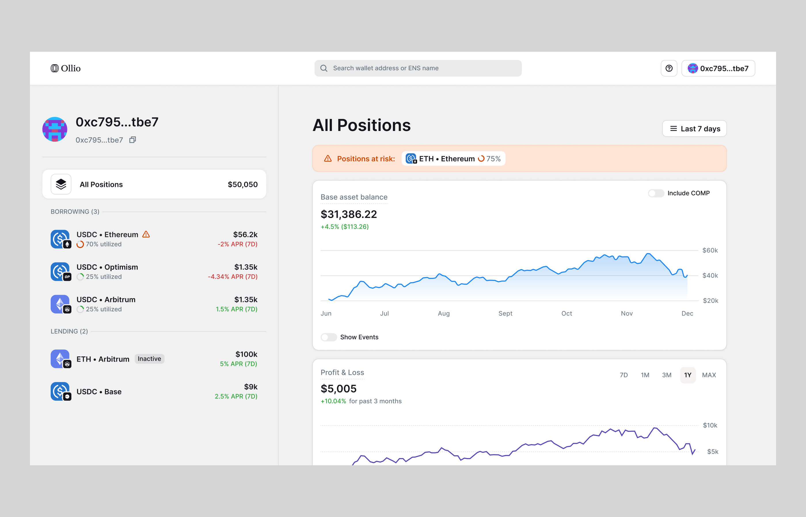

IMAN
NAZRI
Currently designing at Etherscan. Drawn to frontier technologies. Recently, tinkered alot with agentic coding + Expo Go to bridge the delight-gap that is often missed in static Figma canvas.
HIGHLIGHTED
PROJECTS
Etherscan MCP UI
Etherscan MCP UI
View DemoI designed and coded the Etherscan MCP UI, a widget kit interacting with Etherscan’s MCP capabilities. Pushed PR to private repo + deployed to staging for engineers to test out with real data.
View Demo

Blockscan App: Agent Mode
Blockscan App: Agent Mode
Redesign the mobile app’s UX end-to-end in Figma + Expo Go. Focused on extending the AI agent beyond Q&A, to watchlist management and cross-chain DeFi position tracking.
View DemoSolscan - Token Holders Visualizer
Solscan - Token Holders Visualizer
View DemoDesigned the Transaction Flow Visualizer for Solscan — turning raw on-chain data into an intuitive node graph that maps token movements and program interactions, making complex transaction traces readable at a glance.
View Demo

Ollio - Compound Portfolio Tracker
Ollio - Compound Portfolio Tracker
Designed Ollio, a multichain portfolio tracker. Enables users to monitor their Compound V3 position health, identify collateral risks, and track liquidation thresholds across multiple chains.
